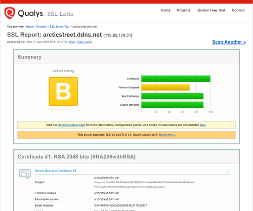

https://でもアクセスできるようにする（Let's Encrypt使用）現状はhttp://でないとアクセスできなくて、それをするとChromeから「安全でない可能性が～」みたいなことを言われる。
HTTPとHTTPSの違いは「httpsとは」とかで検索すると詳しい解説が出てくるのでそちらに譲るとして、ざっくり説明すると
2.については解説にちょっとだけ説明を書いておく。
https://arcticstreet.ddns.netでもアクセスできるようにする。
リモート（Raspberry Pi）
Let's Encryptは、無料でSSL証明書を取得することが出来るサービスです。
(中略)
certbotコマンド(旧称letsencrypt)は、公的な認証局Let's Encryptが発行する無料のTLSサーバ証明書を、簡単なコマンド操作で取得・更新できる、革命的なオープンソースソフト。(中略)
ちまたで言うSSLは今は技術的に発展したTLSのこと。これに対応したサイトのURLが
https://で始まるので、HTTPSとも呼ばれる。以降TLSと表記する。
やり方は以前の記事を参照。外部から待ち受けるポートをTCPの443番とし、宛先がRaspberry PiのIPと443番ポートになるようにする。
Certbot - Debianbuster Nginxに従う。
$ sudo apt-get install certbot python-certbot-nginxxxxxxxxxxx$ sudo certbot --nginxSaving debug log to /var/log/letsencrypt/letsencrypt.logPlugins selected: Authenticator nginx, Installer nginxEnter email address (used for urgent renewal and security notices) (Enter 'c' tocancel):コマンドを入力すると聞かれるもの
メールアドレス
緊急の更新とセキュリティ通知に使うらしい。空白のまま進むと「メールアドレスを入力するか--register-unsafely-without-emailオプションを付けてね。でも/etc/letsencrypt/accountsにあるアカウントキーを絶対にバックアップしておいてね。」と言われる。メールアドレス入力無しで運用したらどういうことになるのか調べてもいいけど、とりあえず今回はメールアドレスを入力することにする。
規約の同意
Electronic Frontier Foundation（Let's Encryptプロジェクトの共同出資者でCertbotの開発元）へのメールアドレスの提供
HTTPS化するドメイン
ざっくり言うとURLのこと。自分はarcticstreet.ddns.netと入れた。後で「おめでとう！https://arcticstreet.ddns.netが有効化されました！」と出るので、サブドメインやホスト名も含めたFQDN（Fully Qualified Domain Name、完全ドメイン）を入力しないといけない。
HTTP接続をHTTPS接続にリダイレクトするか
2: Redirectを選択すると、http://arcticstreet.ddns.netでアクセスしても自動的にhttps://arcticstreet.ddns.netに変わる。
/etc/letsencryptディレクトリをバックアップしろと言われるのでする。ラズパイ内にバックアップを作るのと、念のためローカルにダウンロードしておく。いくつかのファイルが権限の関係でscpでダウンロードできないのでzip圧縮して転送する。
バックアップ用ディレクトリを作りそこへコピー＆確認
xxxxxxxxxx$ mkdir ~/backup$ sudo cp -r /etc/letsencrypt ~/backup$ cd ~/backup$ lsletsencryptzipコマンドをインストールし、letsencryptディレクトリをzip圧縮
xxxxxxxxxx$ sudo apt-get update$ sudo apt-get install zip$ sudo zip -r -y letsencrypt.zip letsencryptローカルからscpコマンドでローカルにletsencrypt.zipをダウンロード
xxxxxxxxxx> scp -P (ポート番号) (ユーザー名)@(ラズパイのIP):~/backup/letsencrypt.zip (保存先フォルダのフルパス)もしこのバックアップから復旧させる必要がある場合、やり方はここが参考になるかも。
サーバー移転（引越し）でLet’s Encrypt 「SSL/TLSサーバ証明書」はどうする？
https://www.ssllabs.com/ssltest/analyze.html?d=(自分の完全ドメイン)にアクセスするとHTTPS化できているかどうか、よく分からない分析も含めて表示してくれる。
SSL Server Test: arcticstreet.ddns.net (Powered by Qualys SSL Labs)

公式HPには「有効期限切れになる前にちゃんと証明書を自動で更新するから、あなたがもう一度Certbotを起動する必要はありませんよ」と言っているが、それならどこかにそういう設定があるはず。
xxxxxxxxxx$ systemctl list-timers | grep certbotTue 2020-09-22 00:52:26 JST 3h 37min left n/a n/a certbot.timer certbot.serviceあった。
もっと調べてみるとこのタイマーは/lib/systemd/system/certbot.timerというファイルで定義されている。
x$ cat /lib/systemd/system/certbot.timer[Unit]Description=Run certbot twice daily[Timer]OnCalendar=*-*-* 00,12:00:00RandomizedDelaySec=43200Persistent=true[Install]WantedBy=timers.target毎日0時（午前、午後問わず）になった瞬間/lib/systemd/system/certbot.serviceを実行する。
xxxxxxxxxx$ cat /lib/systemd/system/certbot.service[Unit]Description=CertbotDocumentation=file:///usr/share/doc/python-certbot-doc/html/index.htmlDocumentation=https://letsencrypt.readthedocs.io/en/latest/[Service]Type=oneshotExecStart=/usr/bin/certbot -q renewPrivateTmp=true/lib/systemd/systemディレクトリにあるものはシステム起動時に全て読み込まれるっぽい。
このセクションは
PID=1(詰まり、init プロセス)の systemd(1) プログラムがどのようにシステムを起動するのかを説明します。systemdの init プロセスは、SysV 的な手続き定義スタイルではなく宣言定義スタイルで書かれた unit 設定ファイル(systemd.unit(5) 参照 )に従い並列で複数プロセスを起動します。これらは以下に記すような複数のパス (systemd-system.conf(5) 参照)から読み込まれます:
- "
/lib/systemd/system": OS のデフォルトの設定ファイル- "
/etc/systemd/system": OS デフォルト設定ファイルをオーバーライドするシステム管理者設定ファイル
ちなみにsystemctl -t timerというコマンドでも確認できるらしい。以下はgrepコマンドでcertbotという文字列がある行を抽出している。
xxxxxxxxxx$ systemctl -t timer | grep certbotcertbot.timer loaded active waiting Run certbot twice dailyどうやったら今アクセスしているWebサーバーが「正しいWebサーバーなのか」を確認できるか、という話。
「大体こんな感じ」という雰囲気で書いているので、細かいところで間違えてるかもしれないけど、そこは容赦してください。
HTTPでは通信は暗号化されていない。なので悪意を持った人（以下悪者）が通信を傍受して盗み見することができるし、なんならその通信内容を改ざんすることもできる。
改ざんが厄介で、例えばあなたが友人のWebサイトを見に行ったときに悪意を持った人がその通信を傍受して、トップページにエロ画像がバーンと表示されるように改ざんしたとしたら・・・「なにコイツ、バカ？」と思われ「いや、ちょっとこんな常識の無いやつと関わるのをやめよう」みたいなことになって、人間関係が壊れるとかいうことが起こる。
だから「ウチはカード情報みたいな漏れたらヤバい情報扱ってないし暗号化しなくても大丈夫」という問題では無い。
じゃあその友人が通信を暗号化していたら大丈夫なのか。
悪者はその友人のサイトそっくりのWebサイトを作って、同じように通信も暗号化もして、あなたにこう言います。
「URL変えたよ。ちょっと見てみて」
そしてエロ画像バーン。
この場合、サーバーは友人が持っているサーバーではないWebサーバーに誘導されている。もし友人サーバーに「その友人によって運営されているサーバーだ」という証明書があれば、あなたはそれを確かめるだけで「このエロ画像バーンサイトは友人のサーバーではないな」と安心することができる。
暗号化と証明書がセットになって初めて信頼性が確保される。なのでHTTPSを使うにはこの2つをセットにしようとどこか偉い人が決めた。
でもここでこの「友人によって運営されているサーバー」という証明書まで偽装されていたらどうか。この場合は「誰に証明してもらったか」で差をつけることになる。例えば本物は「会社の上司に認めてもらいました」というお墨付きがついているとする。
でもあなたはその会社の上司のことを知らない。その会社は大丈夫な会社なのか？というかその会社はその友人が勤めている会社なのか？そもそもその証明書とその会社の上司云々の話すべてが嘘だったら・・・
こうなると訳が分からなくなり、証明書があったとしても意味が無くなってしまう。
でもこれが会社の上司とかそういうよく分からない人じゃなくて「役所に認めてもらいました」だったどうなるか。
誰もが認める公的機関の役所がきっちり本人確認をして「確かにその友人がそのWebサーバーを運営していますよ」という証明を発行していたら、それならまあ信用してもいいかもしれない、となる。
つまり証明書は「信用できる機関が証明した」ものでないと意味を持たない。
実際の役所はそんな仕事をしていないし、そもそもインターネットには国境がないので日本の役所のお墨付きをもらったところで海外の人たちにとってはあまり意味がない。日本だったら国際的にも役所の厳密性は認められてそうな感じだけど、役所の仕事がザルな国もあるだろうし、役所で判断するのは難しい。
なので、インターネット上に全世界的に認められているとされる公的機関（＝認証局と呼ばれる）を作ってそこがお墨付きを与えるような仕組みがある。
お墨付きを与えるために認証局は場合によっては身元確認だったり申請してきた組織の実態調査をしたりする。当然彼らは仕事でそういうことをやっているので、そのお墨付きをもらうためにはお金が必要。
この記事ではHTTPS化を無料でやることを書いたけど、無料で証明書を取ってる以上その認証局は無料で誰にでも発行しているわけで、その管理者が信頼できるかどうかということは調べない。
でもHTTPSは、説明した通り証明書と暗号化をセットにするもの、せめて改ざんを防ぎたくて暗号化はしておきたいという場合、管理者の信頼性は証明されないことを承知の上でLet's Encryptに登録する、というわけ。